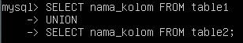
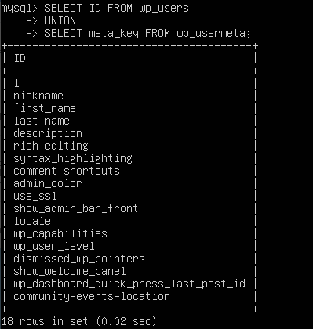
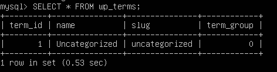
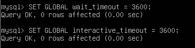
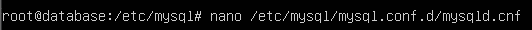
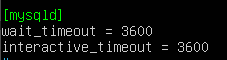
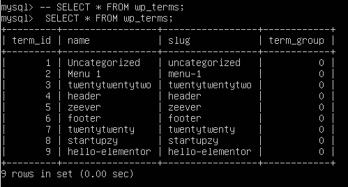
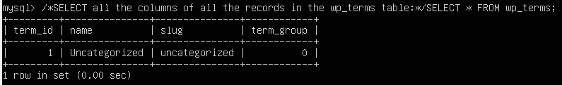

Query MySQL Analysis
Query UNION
Operator UNION digunakan untuk menggabungkan himpunan hasil dari dua atau lebih statement SELECT.
Setiap statement SELECT di dalamnya UNION harus memiliki jumlah kolom yang sama
Kolom juga harus memiliki tipe data yang serupa
Kolom di setiap statement SELECT juga harus dalam urutan yang sama
Sintaks UNION:


Query SELECT
Statement ini digunakan untuk memilih data dari database.SELECT
Data yang dikembalikan disimpan dalam tabel hasil, yang disebut kumpulan hasil.
Syntak SELECT:

Query SLEEP/WAIT
Query SLEEP di Database MySQL dapat dilihat ketika kita menggunakan SHOW FULL PROCESSLIST. Ini menunjukkan query yang sedang berjalan pada database.
Ketika koneksi database dibuat, sesi juga dibuat di server database secara bersamaan, tetapi jika koneksi dan sesi tersebut tidak ditutup dengan benar,
maka query masuk ke mode tidur/sleep setelah waktu tunggu selesai.
Jadi, query SLEEP adalah query yang menunggu batas waktu berakhir. Itu berarti query yang membutuhkan waktu untuk dijalankan dan dihentikan masuk dalam status sleep/tidur.
Efek dari pengguanaan sejumlah besar query MYSQL – SLEEP :
- Peningkatan konsumsi sumber daya CPU dan memori (RAM, cache, dan prosesor).
- Slowing down of server.
- Peningkatan downtime untuk situs web -hacker mencoba memperlambat situs web menggunakan sleep SQL Injections.
Mengapa Proses SLEEP MySQL berlangsung?
Koneksi menunggu query MYSQL baru, yang lebih dikenal sebagai proses tidur/sleep, terjadi jika dalam pengkodean koneksi persisten ke database digunakan atau jika koneksi database tidak ditutup dengan benar.Jadi, Anda mendapatkan koneksi dalam keadaan sleep/tidur ketika skrip PHP terhubung ke MySQL, query dijalankan dan koneksi dibiarkan terbuka tanpa memutuskan sambungan dari server.
Hingga utas/thread mati, buffer pra-utas/thread apa pun akan disimpan dalam memori selama 28.800 detik di MySQL secara default. Jadi, ketika banyak proses PHP tetap terhubung tanpa melakukan apa pun di database, Anda berakhir dengan banyak proses dalam keadaan tidur.
Bagaimana cara mengatasi masalah ini?
Untuk mengatasi masalah perintah SLEEP SQL ini, MySQL menggunakan dua parameter:interactive_ timeout and wait_ timeout.
Ini memerlukan nilai tertentu yang akan diatur untuk membantu query run-up ke waktu yang ditetapkan tersebut. Secara default, kedua parameter telah menetapkan nilai sebagai 28800 detik (yaitu 8 jam).
Untuk mengatur parameter ini di MySQL tanpa memulai ulang, jalankan di bawah dua perintah di terminalnya:
 Lalu kita perlu menambahkan parameter diatas kedalam file mysqld.cnf, dibawah bagian [mysqld], sehingga mereka dapat berlaku setelah memulai ulang server database.  Dan tambahkan baris ini:  di mana waktu dalam hitungan detik. Dengan demikian, koneksi akan ditutup secara otomatis setelah menunggu selama 3600 detik.
Comment Query
Comment quary digunakan untuk menjelaskan bagian dari SQL statement, atau untuk mencegah eksekusi SQL statement. Single line comments dimulai dengan --.Teks apa pun antara -- dan akhir baris akan diabaikan (tidak akan dieksekusi).  Ketika kita menambahkan query COMMENT (--) di depan statement SELECT, statement SELECT tersebut diabaikan.
Multi Line Comments
Multi-line comments start with /* and end with */.Semua text diantara /* and */ akan diabaikan.
The following example uses a multi-line comment as an explanation:
